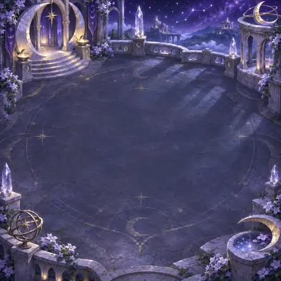
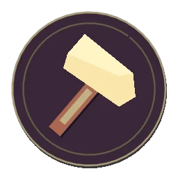
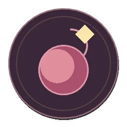
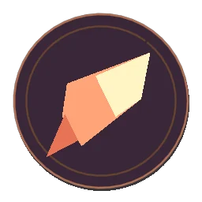
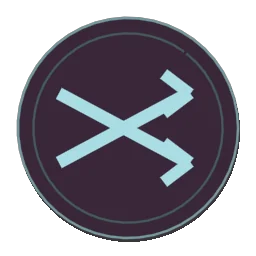
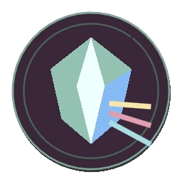
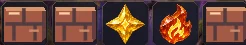
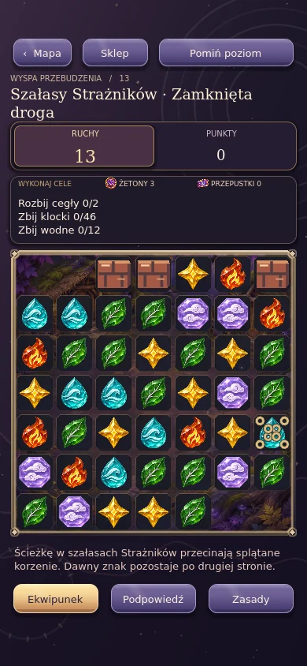
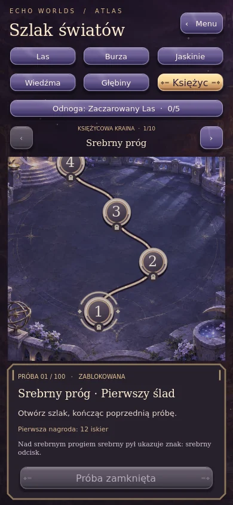

ProgressKit / gry / 0.10.0 Alpha
ECHO
WORLDS
Jedno połączenie.
Sześć krain do odkrycia.
Przygoda match-3 z kampanią fantasy: 600 poziomów w 60 lokacjach. Wersja Alpha, w rozwoju.
Odkryj krainySpróbuj połączenia
Wybierz swoją podróż
Po drugiej stronie portalu.
Wybierz krainę, aby obejrzeć prawdziwą planszę z aplikacji. Portale są prezentacją przestrzenną.
Wybrana kraina
Wyspa Przebudzenia
Świetlisty las, szałasy Strażników i ścieżki wśród korzeni.
Autentyczny ekran rozgrywki z repozytorium gry.
Demonstracja w przeglądarce
Połącz. Uwolnij echo.
Zamień dwa sąsiednie symbole. Trzy jednakowe tworzą połączenie i uruchamiają kaskadę.
To niezależna demonstracja zasady match-3. Kampania, boostery i zapisy pozostają w aplikacji.
Wybierz symbol, a potem jego sąsiada.
Przeszkody i pomocnicy
Każde połączenie ma znaczenie.






Oryginalne ikony boosterów i fragment rzeczywistej planszy z przeszkodami.
Z istniejącej aplikacji
Zobacz prawdziwe ekrany.


ECHO WORLDS w ruchu
Materiał prezentacyjny z oryginalnych zasobów i ekranów aplikacji.
ECHO WORLDS / w rozwoju
Sześć krain. Jedna podróż.
Publiczna dystrybucja jest w przygotowaniu. Nie udostępniamy tutaj prywatnych kompilacji.
Napisz do ProgressKitWszystkie projekty